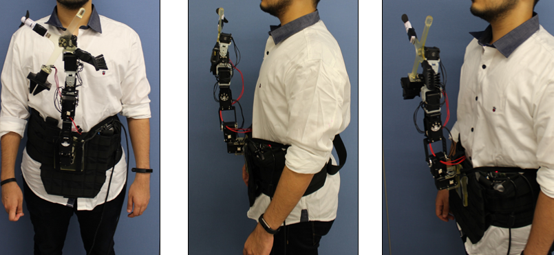

Haptic Robotic Feedback for Virtual Reality
Publication:
"HapticSerpent: A Wearable Haptic Feedback Robot for VR", Extended Abstracts of the 2018 CHI Conference on Human Factors in Computing 2018
Publication link
In this project, we investigated FeelVR, which is a waist-worn robot
capable of providing various kinds of feedback to the user on torso, neck, face, arms and
hands. The robotic arm can provide a variety of tactile feedback types, such as providing
normal or shear forces, as well as gestural output such as poking or stretching the skin. It
can also be used to rub the user’s body with a brush as an end effector or provide air flow to
the face via a fan. Along with the variety of feedback types, the robotic arm can provide
feedback in multiple locations on the body. The main characteristics of our approach are:
Varied Feedback Locations
FeelVR can deliver feedback to areas beyond just the torso. For example, the neck area, face, forearms and upper arms.Extended Feedback
With changeable end effector, FeelVR can deliver variations of haptic feedback. FeelVR can accommodate distinct user preferences or ergonomic differences. For instance, taller users may use bigger or longer end effectors so that the robot arm may reach the whole torso.Multifunctional
FeelVR can be utilized for a variety of experiences beyond tactile feedback. It can be used for effects like feeding the user in VR, or delivering wind-effects to the user’s face or any such variation which is required for the VR experience.Varied Applications
FeelVR can be used for purposes beyond VR experiences. It can be used for drawing the user’s attention to hazards and emergencies, like earthquakes, or for smartphone notifications. It can be used for breaking VR immersion and making the user aware of the things going on in the physical environment
In order to test the usability of the prototype in a real world experience, we developed a Virtual Reality sequence
in conjunction with the Robotic Arm. The software consisted of various scenarios which take place in an open field.
When the user interacts with the Virtual Environment, the robotic arm provides similar feedback to the user physically
thus increasing immersion and enhancing the overall experience.